Kde začít
Čtyři kroky k prvnímu hotovému kousku.
Podívej se na Lekci 1 a stáhni si Návod na první kytičku.
Střih tiskni ve 100 % a změř kontrolní čtverec: musí mít 2 cm.
Vyber si střih z 12 projektů na první večer (Bonus 1).
Pak pokračuj kolekcí, která tě nejvíc láká.
Videolekce
Ke každé technice jedna krátká lekce s českým komentářem.
Knihovna střihů · 10 kolekcí
Každý střih ve skutečné velikosti, díly očíslované v pořadí skládání.
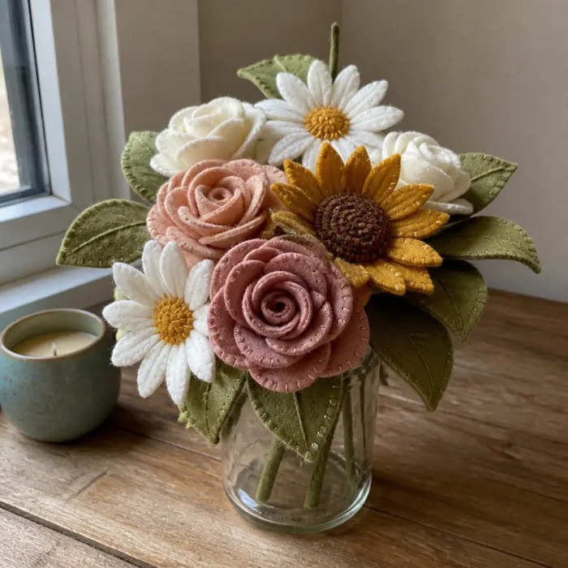
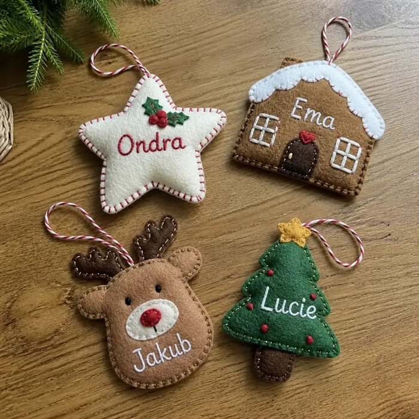
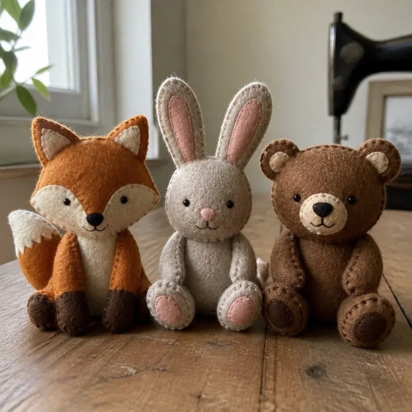
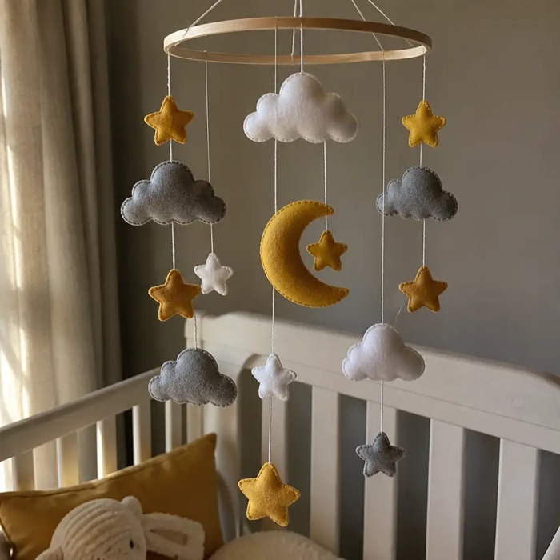
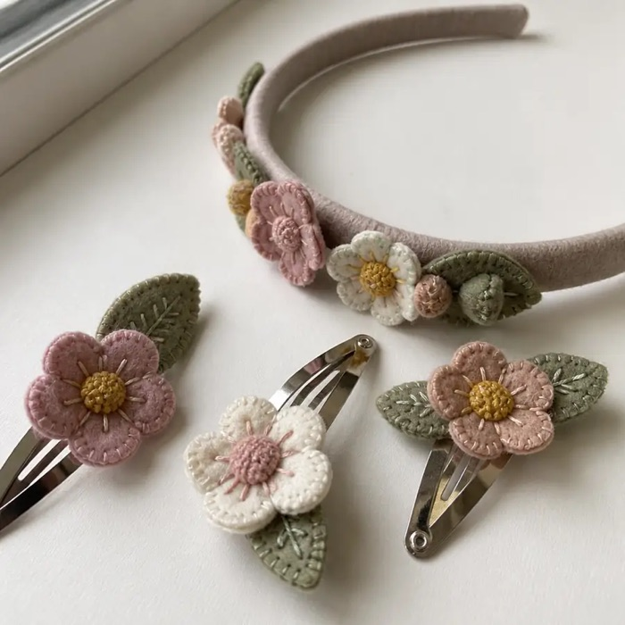
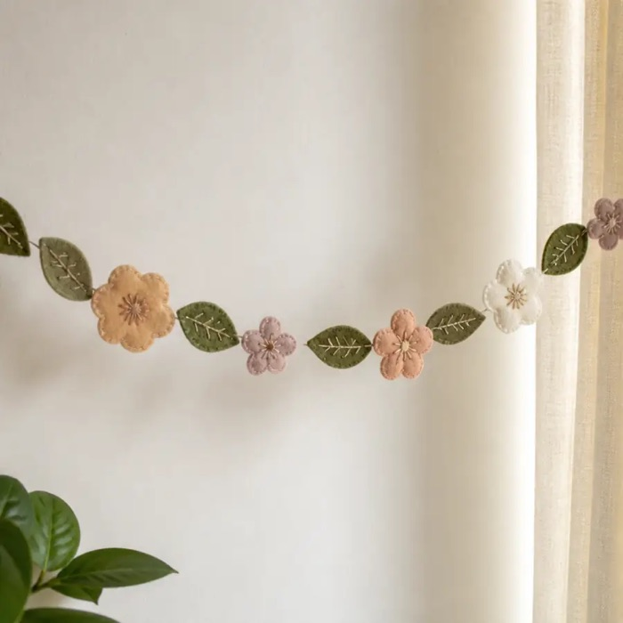
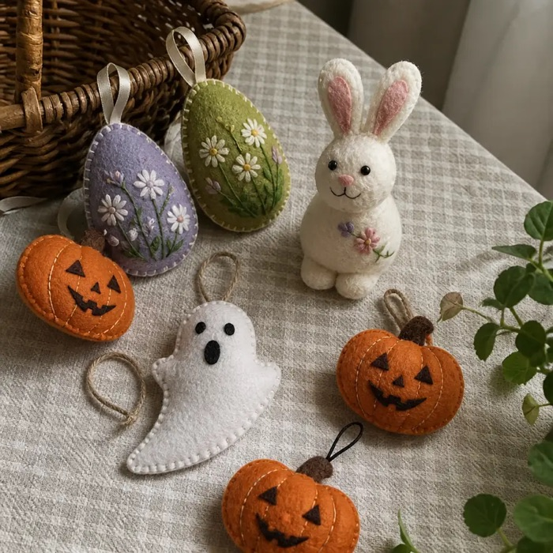
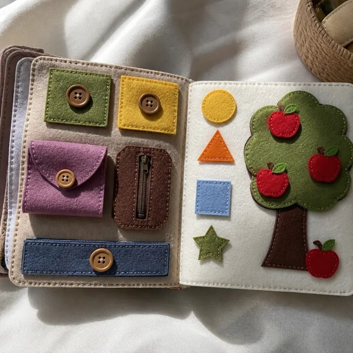
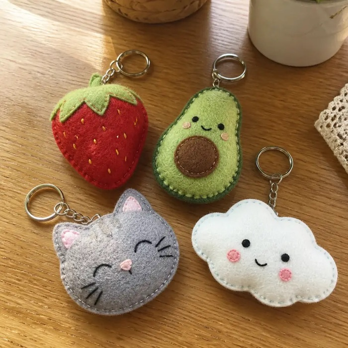
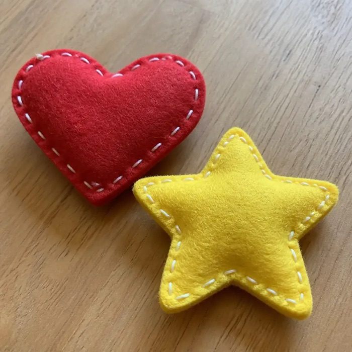
Návody a průvodci
Všechno, co potřebuješ vědět před prvním stehem.
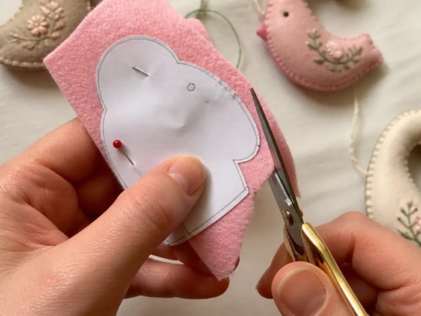
Návod na první kytičku z filcu
Hotový kousek za jeden večer, krok za krokem.
Stáhnout PDF 1,5 MB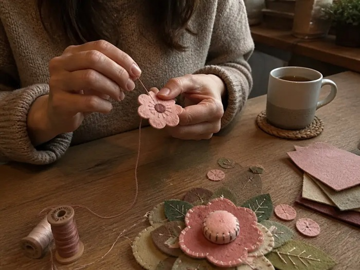
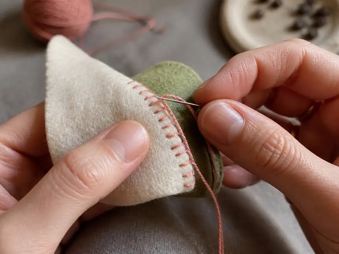
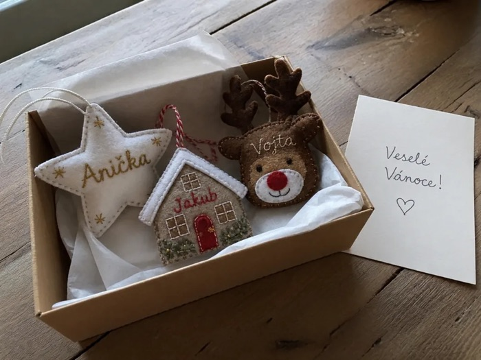
Tvých 5 bonusů
Zdarma k tvému nákupu.
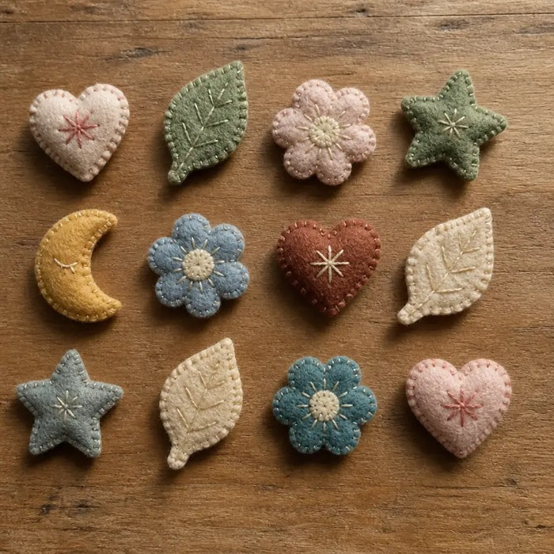
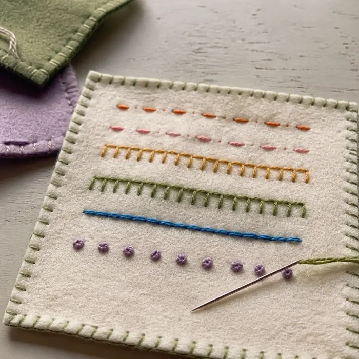
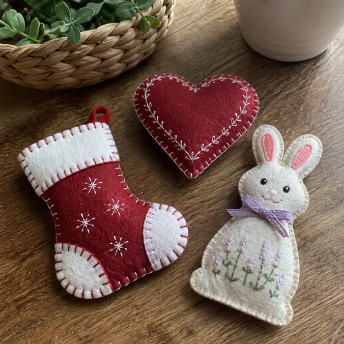
Sváteční kolekce
40 sezónních střihů na Vánoce, Valentýna, Velikonoce a Halloween.
Stáhnout PDF 12,4 MB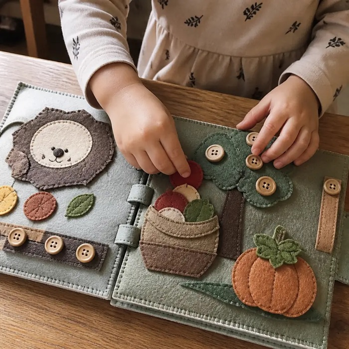
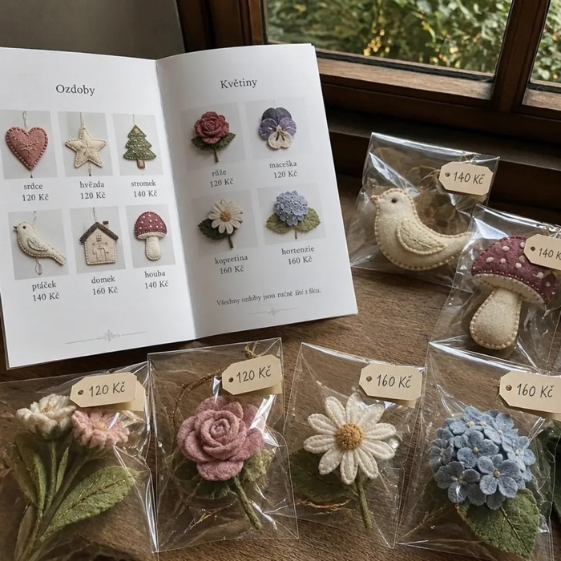
Průvodce prodejem tvých výrobků
Jak nacenit, nafotit a přijímat zakázky na míru.
Stáhnout PDF 3,0 MB